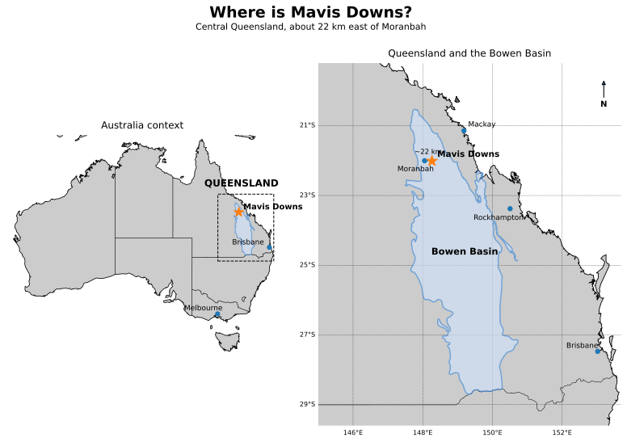
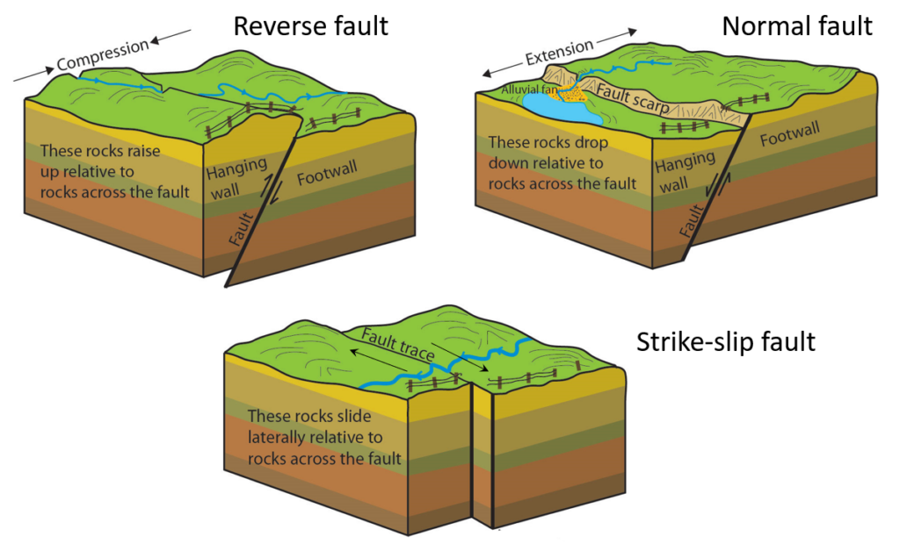
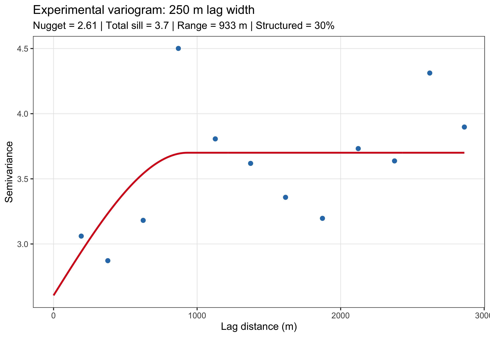
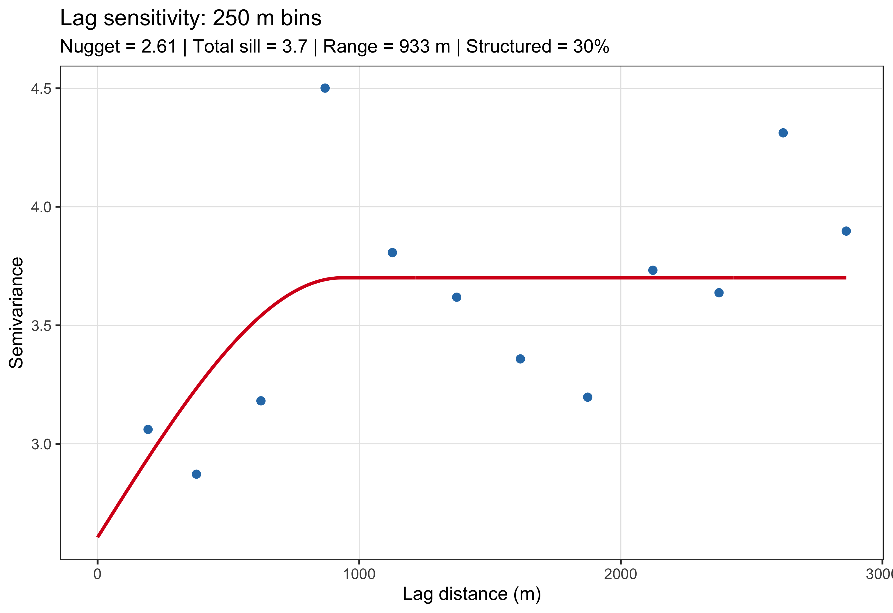
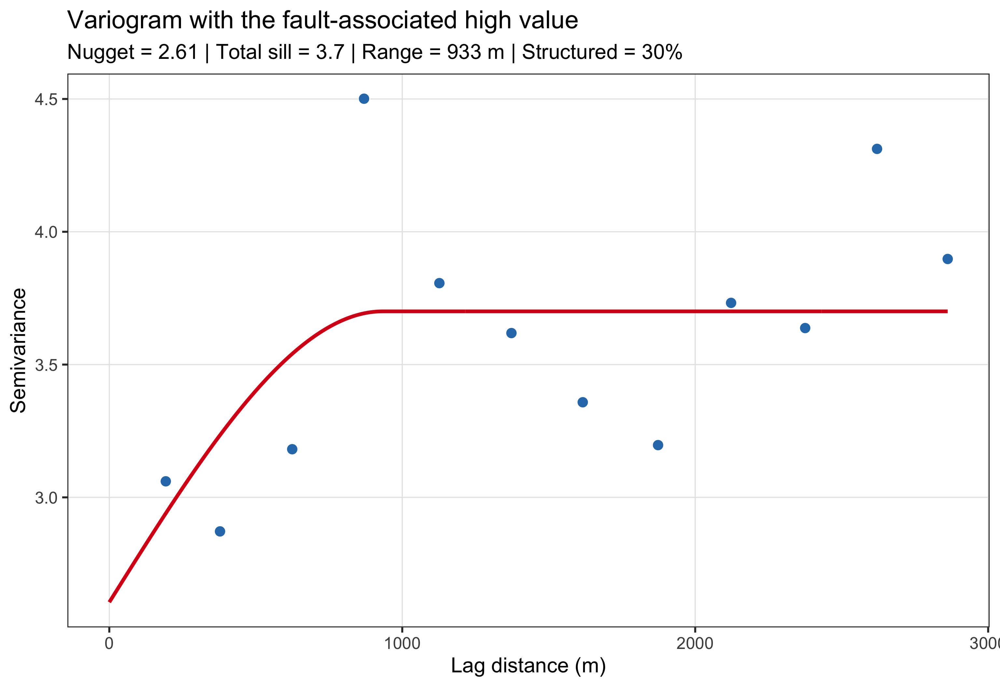
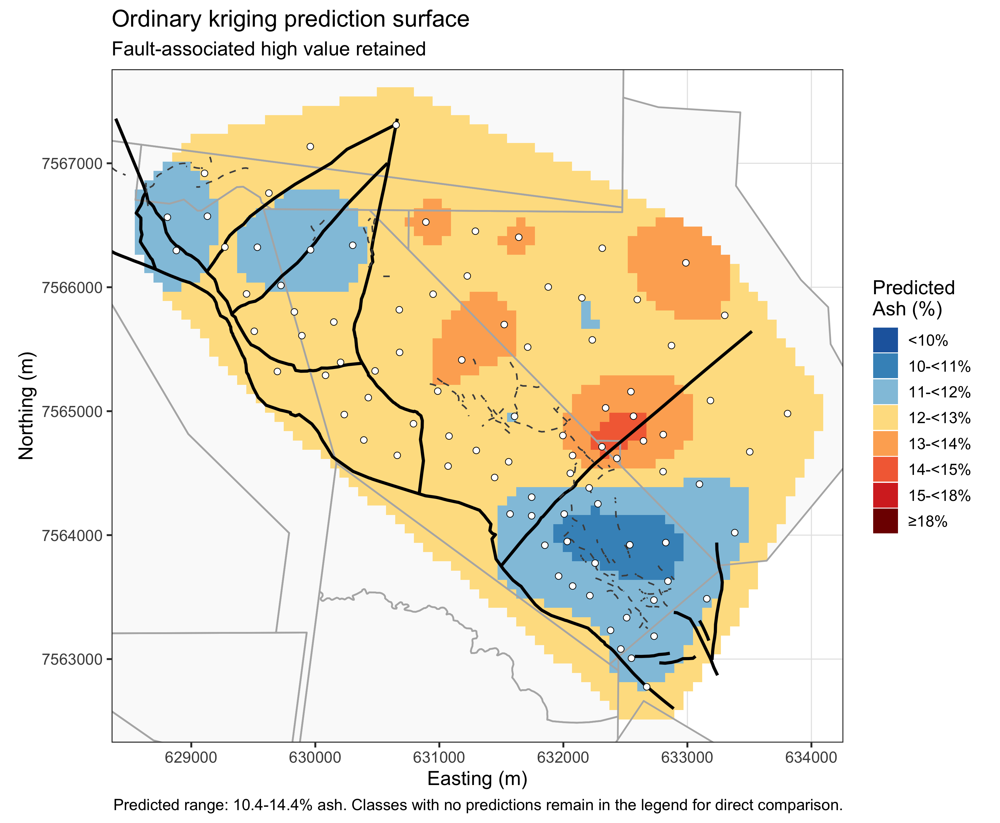
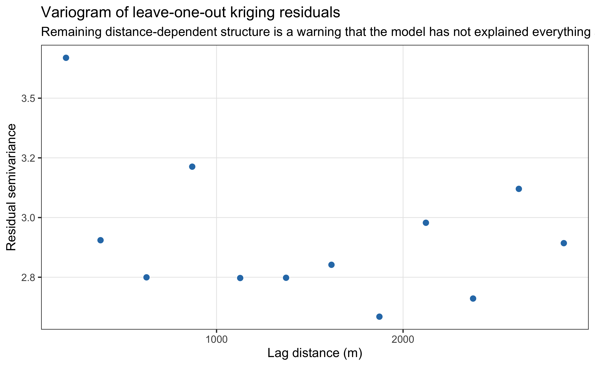
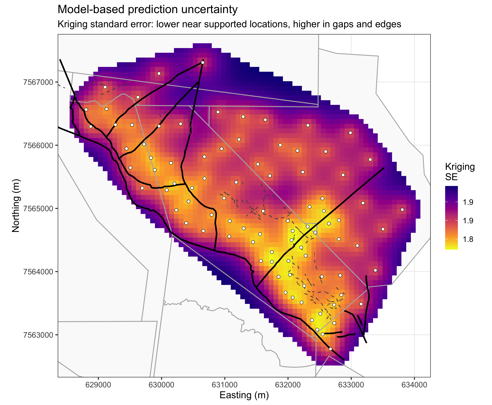

When Location Matters: The Hidden Traps of Spatial Data
Author
Kane Maxwell
🎯 Tutorial objective
You are part of a resource geology team reviewing exploration drilling at the Mavis Downs coal deposit in Queensland’s Bowen Basin. The original case study is based on publicly available pre-mining exploration data. For this tutorial, the real spatial/geological setting has been retained, but the drilling dataset has been expanded and coal-quality values have been modified to create a controlled teaching example.
The task is deliberately practical:
You have funding for only six additional drill holes. Where would you drill them, and why?
You will not write a geostatistical workflow from scratch. Run the supplied code, inspect the outputs, and discuss what they mean for the drilling decision.
Where is Mavis Downs?
Before zooming in to drill-hole coordinates, orient yourself geographically. Mavis Downs is in central Queensland, about 22 km east of Moranbah, within the Bowen Basin. The map below shows its position first at the scale of Australia and then within Queensland and the Bowen Basin.

Location of Mavis Downs in central Queensland and the Bowen Basin.
Meet the study area
Now zoom in to the deposit itself. This is the local map you will use throughout the tutorial. For the moment, just learn the symbols and the overall drilling pattern:
open circles: the 90 existing drill holes;
solid black lines: major/domain faults;
dashed grey lines: faults interpreted from 3D seismic data;
light grey boundaries: mining-lease boundaries.
The geological primer below explains what these structures mean and why the major western bounding fault is especially important to the drilling decision.
Geological primer: what are we actually modelling?
No previous geology or mining knowledge is assumed. Before analysing the drilling and coal-quality data, spend a few minutes understanding what the observations represent and why the geology matters.
This is a steelmaking-coal deposit
Mavis Downs is a coal deposit in Queensland’s Bowen Basin, one of Australia’s most important metallurgical-coal regions. The Mavis Downs deposit has been reported with coking-coal and pulverised coal injection (PCI) potential, both used in conventional steelmaking rather than simply being burned to generate electricity.
That distinction surprises many people. In the 12 months to May 2025, about 61% of Queensland coal production was metallurgical coal, compared with 39% thermal coal. Thermal coal is mainly used for electricity generation; metallurgical coal is used in iron and steel production.
How coal is used to make steel
In the conventional blast-furnace/basic-oxygen-furnace route, iron first has to be extracted from iron ore.
Coking coal is heated in the absence of oxygen to make coke, a strong carbon-rich material. Coke is charged into the blast furnace with iron ore. It supplies heat and carbon, helps remove oxygen from the iron ore, and physically supports the material inside the furnace.
PCI coal is not first converted to coke. It is ground to a fine powder and injected directly into the blast furnace, where it supplies additional heat and carbon and can replace part of the coke requirement.
What is a coal seam?
Coal is a carbon-rich sedimentary rock. It occurs as layers within sequences of other sedimentary rocks such as sandstone, siltstone and mudstone. A layer of coal is called a coal seam.
Stratigraphy simply means the arrangement and relationships of those rock layers. In this exercise we are sampling one particular target coal layer, the L, or Leichhardt, seam. The name itself is not important. What matters is that the drill holes are sampling different locations within the same target geological layer.
This is why the problem is spatial: the 90 Ash observations are not unrelated measurements. They are samples from a geological body that extends through space and may have continuity from one location to another.
What is a fault?
A fault is a fracture in rock along which movement has occurred. Movement can be vertical, lateral, or a combination of both. A fault can therefore offset layers that were once continuous, including a coal seam.

Principal fault types: normal, reverse/thrust and strike-slip.
Source: National Park Service, adapted by Steven Earle, via BCcampus Physical Geology; public domain.
That distinction matters for spatial analysis. Two drill holes can be close together on a map but still sit in different structural settings if a fault lies between them. In other words, geographic distance is not always the same thing as geological continuity.
Faults are also one reason geologists may deliberately drill several closely spaced holes. Those holes may be testing where a fault lies, how far the seam has been displaced, whether coal continues on both sides, or whether coal quality changes near the structure. A cluster is therefore not automatically wasted or redundant sampling.
What does Ash mean?
One of the main variables in this tutorial is Ash (%). Coal contains combustible organic material together with non-combustible mineral matter. In a standard laboratory test, the mineral residue left after the coal is heated is reported as Ash.
For the metallurgical coal considered here, lower Ash is generally better because unwanted mineral material ultimately adds to the material that must be handled and removed during processing and ironmaking. Ash is therefore an important coal-quality variable.
But there is an important distinction for this exercise:
Your drilling objective is not simply to find the lowest Ash values.
A low-Ash area that is already well understood may tell us little if drilled again. A higher-Ash, structurally complicated, or poorly sampled area may provide much more useful new information.
Geological setting for the drilling decision
You do not need to become a coal geologist to complete the tutorial. Keep these facts in mind when reading the maps:
the target is one coal seam within a layered sedimentary deposit;
the target seam reaches the surface, or crops out, against the major western bounding fault;
from there the seam extends and dips, meaning becomes deeper, toward the east;
in this exercise there is no target L-seam coal west of that western bounding fault;
faults within the deposit can offset or interrupt geological continuity;
drilling is denser in some structurally important areas because closely spaced holes can answer geological questions;
on the maps, solid black lines are the major/domain faults and dashed lines are faults interpreted from 3D seismic data.
This gives us an important rule for the rest of the tutorial:
A statistically attractive location is not automatically a geologically valid drilling target, and a dense cluster is not automatically poor sampling.
NoteWhat are we trying to learn with six new holes?
The six-hole program should improve our understanding of the target seam: its spatial continuity, coal-quality variation, important internal gaps, down-dip extent, and uncertainty around geological structures. Different six-hole programs can therefore be defensible if they answer useful but different questions.
The key question is not simply “Where should we drill?” It is “What would we learn by drilling there?”
TipBefore doing any analysis
Look at the existing drilling pattern and faults. If you had to choose six new holes right now, where would you put them?
You do not need to record an answer yet. Keep your first impression in mind and return to it at the end of the tutorial after you have examined the coal-quality data, spatial structure, prediction and uncertainty.
1. How has the deposit been sampled?
Before looking at coal quality, start with the sampling geometry. The left panel shows the actual drilling. The right panel is an idealised regular reference pattern: equally spaced points on a square grid, clipped to the same general drilling footprint. Its spacing is chosen to give approximately the same overall point density as the 90 observed holes.
The regular grid is not a recommended drilling design. It is simply a visual baseline. Against regular coverage, clustering, gaps, preferred directions and changes in sampling density in the real drilling should be much easier to recognise.
Real exploration programs usually evolve through time. Early holes may test a broad concept, followed by infill drilling, step-outs, and targeted drilling around structures. Some clustering can therefore reflect the sequence of exploration, not just spatial design. A drilling-date field is not available in this teaching dataset, so temporal sampling patterns are outside the scope of this exercise.
Question
What does the actual drilling pattern tell you about how this deposit has been sampled? Consider clustering, gaps, preferred directions/corridors, changes in sampling density, and whether some clustering near faults could be deliberate.
2. Conventional EDA: what do we see if we ignore location?
Start exactly as you might with a non-spatial dataset: look at the distribution and potential outliers.
What do the histogram and boxplot tell you about the overall Ash distribution and potential outliers? What important information is still missing because location has been ignored?
3. Global outlier, domain outlier, or something geological?
Now add location and geological context back into the problem. The same borehole identified by the conventional boxplot is labelled on the map, and the boreholes are coloured by their Ash values.
The boxplot identifies MD_SYN_042 as the global outlier. What changes when you see where this borehole is located? If fault-affected coal represented a different geological domain, would a whole-deposit outlier rule still be appropriate? What else does this map show that the histogram and boxplot missed?
4. Spatial outliers: how different is a hole from its nearest neighbour?
The conventional boxplot found one clear global outlier. But a value can be perfectly ordinary in the overall distribution and still be very unusual for its location.
Recall from the lecture: a residual is observed value - predicted value.
Here we leave each hole out in turn and predict it from its single nearest neighbouring hole using one-neighbour IDW. With one neighbour, the prediction is simply that neighbour’s value. The residual therefore answers a very intuitive question: how different is this hole from the closest information available to it?
We use a robust MAD-based residual scale and flag observations with |robust z| ≥ 2. This is a deliberately sensitive screening diagnostic, not a formal rule for deleting samples.
Why can the conventional boxplot and the nearest-neighbour residual screen flag different observations? Which spatially unusual observations would you investigate first, and does this screen tell you which data should be deleted?
5. Exact-interpolator visual check
A useful spatial EDA check is to interpolate the observations with an exact interpolator. Here we use IDW. Unlike kriging, IDW does not smooth away the observed values, so strongly influential individual samples often appear as local bullseyes.
This is not being presented as the final prediction surface. It is a diagnostic map designed to make local sample influence obvious.
Which features look like broad spatial structure, and which look dominated by individual samples? Do the nearest-neighbour residual flags correspond to visible bullseyes? Does a bullseye prove that a value is bad data?
6. What changes if we investigate within a candidate domain?
The IDW map suggests that the southern part of the deposit may form a relatively coherent lower-ash population. In real work, a domain would need to be justified independently from geology, structure, stratigraphy or other evidence. Here we isolate this area only as a demonstration of why the population used for comparison matters.
Code
# Illustrative teaching boundary only. This is NOT being presented as a# geologically validated domain boundary.southern_domain_cutoff <-7564300southern_domain <- boreholes |>filter(Northing < southern_domain_cutoff)southern_cv <-loocv_idw( southern_domain,nmax =1,idp =2)southern_resid_center <-median(southern_cv$residual, na.rm =TRUE)southern_resid_scale <- stats::mad( southern_cv$residual,center = southern_resid_center,constant =1.4826,na.rm =TRUE)if (!is.finite(southern_resid_scale) || southern_resid_scale ==0) { southern_resid_scale <-sd(southern_cv$residual, na.rm =TRUE)}southern_cv <- southern_cv |>mutate(robust_z = (residual - southern_resid_center) / southern_resid_scale,domain_flag =abs(robust_z) >= spatial_flag_threshold )southern_flags <- southern_cv |>filter(domain_flag) |>arrange(desc(abs(robust_z)))southern_flags_sf <- southern_domain |>filter(Borehole_Name %in% southern_flags$Borehole_Name) |>left_join( southern_flags |>select(Borehole_Name, observed, nearest_neighbor, nearest_distance_m, predicted, residual, robust_z),by ="Borehole_Name" )# Illustrative outline used only to show the candidate domain on the IDW map.southern_domain_outline <- southern_domain |>summarise() |>st_convex_hull() |>st_buffer(220)
Candidate domain is illustrative only; it is not a validated geological boundary.
Question
Did changing the comparison population change which holes look anomalous? What does this tell you about the phrase “outlier”?
7. Is there enough spatial structure to justify kriging?
The variogram has a specific job in this workflow. Before using kriging, we need evidence that nearby Ash values are more similar than distant ones. If the experimental variogram were essentially flat or showed no stable distance-dependent structure, there would be little reason to use a spatially correlated predictor such as kriging.
If a usable spatial structure exists, the fitted variogram also gives us a practical scale for the drilling decision:
the range tells us approximately how far spatial correlation persists;
the nugget relative to the sill tells us how much variability remains unresolved even at short distances;
the spatially structured percentage is calculated as partial sill / total sill × 100 (equivalently, 100 minus the nugget-to-sill percentage). It is the proportion of the fitted variability represented by distance-dependent spatial structure rather than nugget or unresolved very-short-range variation. A higher value indicates greater fitted spatial coherence, but it is not a general “percentage of variance explained”;
together, these help us judge when another hole is likely to add genuinely new spatial information rather than simply duplicate nearby support.
NoteDecision checkpoint
At the end of this section you should be able to answer two questions:
Is there a spatial signal strong and stable enough that kriging is worth using?
At approximately what distance does an existing hole stop providing much information about another location?
Code
lag_width <-250vgm_default <-fit_variogram_bundle( boreholes,lag_width = lag_width,cutoff =3000)plot_variogram( vgm_default,paste0("Experimental variogram: ", lag_width, " m lag width"))

Code
knitr::kable(vgm_default$stats)
Nugget
Partial sill
Total sill
Range (m)
Nugget / sill (%)
Spatially structured (%)
2.6
1.1
3.7
933
70
30
Question: Spatial continuity
Does the variogram provide evidence of spatial dependence strong enough to justify kriging? What do the fitted range, nugget-to-sill proportion and spatially structured percentage imply for the value of additional drilling?
WarningA usable variogram is necessary, not sufficient
Seeing spatial continuity gives us a reason to consider kriging, but it does not prove that all kriging assumptions are satisfied. The earlier EDA suggested possible trend, fault effects and candidate geological domains. In real work we would also test directional continuity / anisotropy rather than automatically accepting one stationary omnidirectional model. Here we deliberately continue with a simple ordinary-kriging model so we can focus on spatial reasoning and the drilling decision.
Robustness check: does lag choice change that conclusion?
The experimental variogram depends partly on how pairs are grouped. Change only lag_width below and try 125 m, 250 m, and 500 m. The purpose is not to find a magical “correct” lag. It is to see whether the decision-relevant interpretation survives reasonable analytical choices.
Code
lag_width <-250# Try 125, 250, and 500vgm_lag_test <-fit_variogram_bundle( boreholes,lag_width = lag_width,cutoff =3000)plot_variogram( vgm_lag_test,paste0("Lag sensitivity: ", lag_width, " m bins"))

Code
knitr::kable(vgm_lag_test$stats)
Nugget
Partial sill
Total sill
Range (m)
Nugget / sill (%)
Spatially structured (%)
2.6
1.1
3.7
933
70
30
Question: Lag-width sensitivity
Across reasonable lag widths, do you still reach the same two conclusions: (1) that spatial continuity exists, and (2) roughly how far it persists? If those conclusions changed dramatically, what would that mean for using kriging to guide drilling?
8. Does treatment of the fault-associated high change the spatial story?
The earlier EDA showed that the major high-Ash observation is both statistically unusual and geologically interesting because of its structural context. Before committing to kriging, we should ask whether our decision about that value materially changes the spatial model.
Change only include_fault_high below.
Code
include_fault_high <-TRUE# Change to FALSE to test the alternativeif (include_fault_high) { boreholes_model <- boreholes} else { boreholes_model <- boreholes |>filter(Borehole_Name != focus_anomaly_name)}vgm_selected <-fit_variogram_bundle( boreholes_model,lag_width =250,cutoff =3000)plot_variogram( vgm_selected,if (include_fault_high) {"Variogram with the fault-associated high value" } else {"Variogram without the fault-associated high value" })

Code
knitr::kable(vgm_selected$stats)
Nugget
Partial sill
Total sill
Range (m)
Nugget / sill (%)
Spatially structured (%)
2.6
1.1
3.7
933
70
30
Question
Does removing the fault-associated high change the variogram enough to change your drilling strategy? Which part of the spatial model is robust, and which part is sensitive to this modelling decision? Would you keep the observation in the regional prediction?
9. What does the current model predict?
Run ordinary kriging using the modelling decision you made above. The prediction surface is displayed using the same ash classes and colour scale as the observed points so the two maps can be compared directly.
prediction_map <-ggplot() +map_background_layers() +geom_tile(data = kriging_plot_data,aes(x = X, y = Y, fill = pred_ash_class),width = grid_cellsize,height = grid_cellsize,show.legend =TRUE ) +scale_fill_manual(values = ash_palette,limits = ash_labels,breaks = ash_labels,drop =FALSE,name ="Predicted\nAsh (%)" ) +guides(fill =guide_legend(override.aes =list(fill =unname(ash_palette)) ) ) +map_overlay_layers() +geom_sf(data = boreholes_model,shape =21,fill ="white",colour ="black",size =1.7,stroke =0.3 ) +coord_sf(xlim = map_xlim,ylim = map_ylim,expand =FALSE,datum =st_crs(target_crs) ) +labs(title ="Ordinary kriging prediction surface",subtitle =if (include_fault_high) {"Fault-associated high value retained" } else {"Fault-associated high value excluded" },x ="Easting (m)",y ="Northing (m)",caption =paste0("Predicted range: ", round(prediction_min, 1), "-",round(prediction_max, 1), "% ash. Classes with no predictions remain in the legend for direct comparison." ) ) + map_themeprediction_map

Question
What features of the prediction surface would influence where you drill? Where might the map be giving you more confidence than the geology deserves?
Optional extension: what did the model leave behind?
The lecture introduced another useful diagnostic: after fitting a model, ask whether its residuals still contain spatial structure.
At sampled locations, ordinary kriging under this setup is an exact interpolator, so ordinary in-sample residuals would tell us very little. Instead, we use leave-one-out cross-validation: remove one hole, predict it from all the others using the selected variogram model, and calculate:
residual = observed Ash - predicted Ash
If the model has captured the important spatial structure, we would hope the residuals show no strong spatial pattern. If nearby residuals remain systematically similar, the model may have left predictable spatial information behind.
ggplot(kriging_residual_variogram, aes(x = dist, y = gamma)) +geom_point(shape =21,size =2.8,stroke =0.35,fill ="#2C7BB6",colour ="white" ) +labs(title ="Variogram of leave-one-out kriging residuals",subtitle ="Remaining distance-dependent structure is a warning that the model has not explained everything spatially",x ="Lag distance (m)",y ="Residual semivariance" ) +theme_bw(base_size =12) +theme(panel.grid.major =element_line(colour ="grey90", linewidth =0.3),panel.grid.minor =element_blank() )

Question: Optional residual diagnostic
Do the residual map and residual variogram look approximately spatially structureless, or has the model left a spatial pattern behind? If structure remains, what assumptions would you investigate before simply fitting a more complicated model?
10. Where are we uncertain?
Kriging also provides a model-based prediction variance. Here we plot its square root, the kriging standard error.
Code
uncertainty_map <-ggplot() +map_background_layers() +geom_tile(data = kriging_plot_data,aes(x = X, y = Y, fill = kriging_se),width = grid_cellsize,height = grid_cellsize ) +scale_fill_viridis_c(option ="C",direction =-1,name ="Kriging\nSE" ) +map_overlay_layers() +geom_sf(data = boreholes_model,shape =21,fill ="white",colour ="black",size =1.7,stroke =0.3 ) +coord_sf(xlim = map_xlim,ylim = map_ylim,expand =FALSE,datum =st_crs(target_crs) ) +labs(title ="Model-based prediction uncertainty",subtitle ="Kriging standard error: lower near supported locations, higher in gaps and edges",x ="Easting (m)",y ="Northing (m)" ) + map_themeuncertainty_map

Question
Where is prediction uncertainty highest, and why? Is the area with the lowest kriging error necessarily the area you understand geologically best?
WarningImportant terminology
Avoid calling this an “error surface” without qualification. At unsampled locations we do not know the actual prediction error. This is a model-based kriging variance/standard-error surface.
11. Your decision: six new drill holes
Management has approved six additional drill holes. No more drilling will be approved this season.
The candidate locations are deliberately mixed: some may address strong spatial or geological questions, while others may be weak or even geologically invalid. Check geological validity before ranking candidates statistically. Then consider drilling density, infill versus step-out, variogram range, anomalies/domains, predicted Ash, kriging uncertainty and proximity to faults.
The table gives the main statistical evidence for comparing the candidates: spacing from existing drilling, distance as a proportion of the fitted variogram range, predicted Ash, kriging standard error and proximity to mapped faults.
Before choosing six holes, work through the candidates in this order:
Geological validity: is the target seam expected to exist at the proposed location?
Sampling role: is the site internal infill, a down-dip/edge step-out, or another clearly justified target?
Spatial information: does its distance from existing drilling add materially new information relative to the fitted variogram range?
Model evidence: what do predicted Ash and kriging SE suggest?
Geological context: is the site close to mapped faulting, and does that proximity create unwanted uncertainty or answer a clearly defined structural question? For this coal-quality exercise, a site directly on a fault is not automatically desirable.
Question: Geological validity
Are any candidate sites inconsistent with the known geology and therefore rejectable regardless of their statistical metrics? Explain why before selecting your six holes.
Choose your six sites only after completing the geological-validity check above. Edit only the site IDs in the short code chunk below.
Code
chosen_sites <-c("", "", "", "", "", "") # ENTER SIX SITE IDs
The supplied plotting code checks the selection and adds the six chosen holes to the uncertainty map.
For each selected site, identify whether it is primarily internal infill, a down-dip/edge step-out, or another justified target, and state the main question that drilling it would answer.
Question: Overall strategy
How did the variogram range influence your choices? Why is your program better than simply drilling the six locations with the highest kriging standard error?
Optional: if the budget is cut to three holes
Question
Which three of your six holes survive, and what information are you willing to leave unresolved?